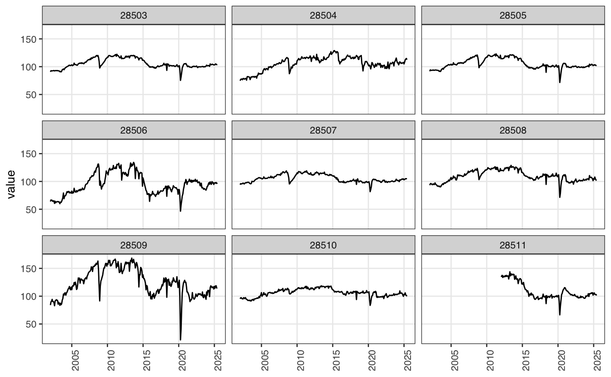
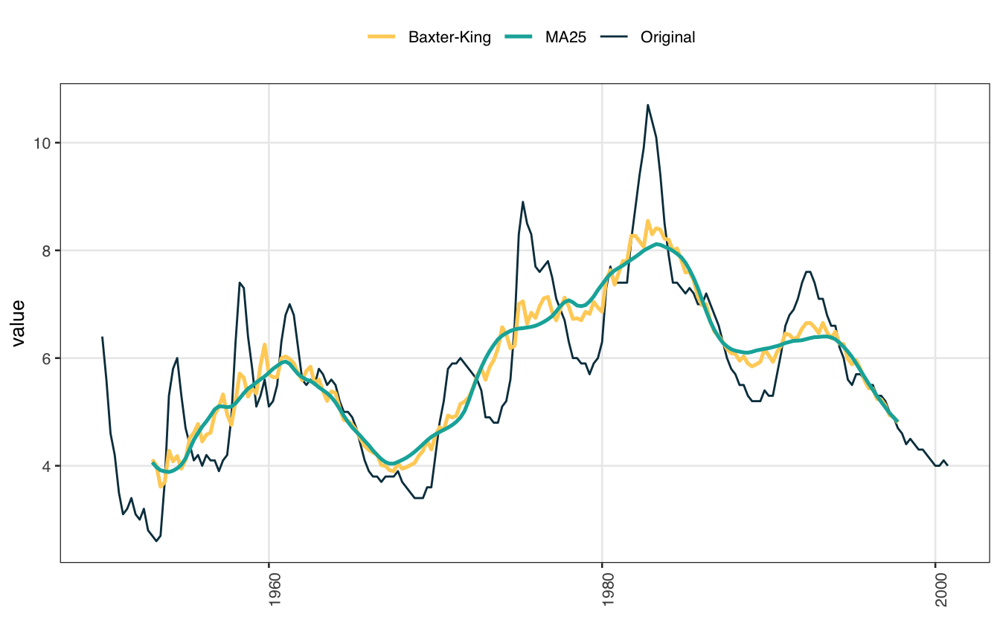
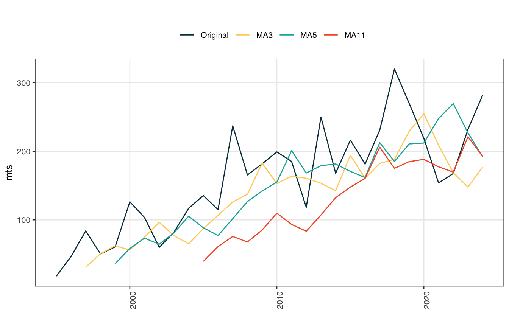

library(rbcb)
library(ggplot2)
library(forecast)
theme_series = theme_bw(base_size = 10, base_family = "sans") +
theme(
legend.position = "top",
panel.grid.minor = element_blank(),
axis.text.x = element_text(angle = 90),
axis.title.x = element_blank()
)
atletas = rbcb::get_series(23617, as = "ts")
autoplot(atletas) + theme_seriesMédias móveis
Uma média móvel, como o nome sugere, calcula a média de uma série temporal em janelas móveis. Tipicamente, a média móvel serve como uma estimativa da tendência da série; também é bastante comum usar a média móvel para identificar ciclos ou padrões numa série. Aplicar uma média móvel numa série de tempo \(y_t\) produz uma nova série \(z_t\):
\[ z_t = \sum_{j = -k}^{k}a_{j}y_{t+j} \] No caso mais simples, k = 1, temos:
\[ z_{t} = a_1y_{t-1} + a_2 y_{t} + a_3 y_{t+1} \]
Supondo que os pesos devem ser todos iguais e somar um temos a média móvel simples abaixo:
\[ z_{t} = \frac{1}{3}y_{t-1} +\frac{1}{3} y_{t} + \frac{1}{3} y_{t+1} \]
O exemplo acima, mostra uma média móvel simétrica de ordem 3, onde todos os pesos são iguais. Cada ponto na nova série \(z_t\) é uma média entre os valores vizinhos da série original. Tipicamente, valores próximos uns aos outros no tempo costumam ser similares; na prática, isto torna o filtro de médias móveis bastante suave.
Evidentemente, não é possível calcular este filtro no início e no final da série \(y_t\). Isto implica que a série \(z_t\) tem menos observações do que a série original \(y_t\). Isto, de fato, é um ponto negativo quando se usa filtros de médias móveis.
Médias móveis simétricas sempre tem um número ímpar de termos: no exemplo acima, \(k=1\) resultou num filtro com três termos; se tivéssemos usado \(k=2\) teríamos cinco termos e assim por diante. É possível fazer médias móveis não-simétricas variando a janela temporal. A equação abaixo mostra um filtro que soma as últimas duas observações e tira a média junto com a observação atual e a próxima observação.
\[ z_{t} = \frac{1}{4} y_{t-2} + \frac{1}{4} y_{t-1} + \frac{1}{4} y_{t} + \frac{1}{4} y_{t+1} \]
Não existe forte “contraindicação” sobre o uso de médias móveis não-simétricas. Vale notar, contudo, que é relativamente fácil transformar uma média móvel não-simétrica em uma média móvel simétrica. Vamos tirar uma média móvel sobre a média móvel acima:
\[ \begin{align} x_{t} & = \frac{1}{2}z_{t} + \frac{1}{2}z_{t+1} \\ x_{t} & = \frac{1}{2}(\frac{1}{4}(y_{t-2} + y_{t-1} + y_{t} + y_{t+1}) + \frac{1}{4}(y_{t-1} + y_{t} + y_{t+1} + y_{t+2})) \\ x_{t} & = \frac{1}{8} y_{t-2} + \frac{1}{4} y_{t-1} + \frac{1}{4} y_{t} + \frac{1}{4} y_{t+1} + \frac{1}{8} y_{t+2} \end{align} \]
A série final é uma média móvel simétrica com menor peso nas pontas. Esta é uma média móvel de ordem 2x4. Este tipo de filtro também é conhecido como média móvel ponderada.
Na primeira demonstração acima, definimos que todos \(a_j\) teriam o mesmo valor. Isto não é necessário. Imagine que queremos um filtro que olha somente para o passado e atribui pesos decrescentes à medida que a observação se afasta no tempo. No caso de uma janela com apenas dois períodos teríamos algo da forma:
\[ z_{t} = \frac{1}{2}y_{t} + \frac{1}{3}y_{t-1} + \frac{1}{6}y_{t-2} \]
Note que os pesos somam 1 e vão decaindo no tempo. De forma mais geral,
\[ \text{WMA}_M = \frac{ny_{t} + (n-1)y_{t-1} + \dots + y_{M-n+1}}{\frac{n(n+1)}{2}} \]
Pode-se definir uma média móvel ponderada com pesos que apresentam algum tipo de decaimento. O filtro acima também é conhecido como média móvel linearmente ponderada, pois os pesos decaem linearmente. Outra opção seria usar pesos que apresentam decaimento exponencial como
\[ z_{t} = \alpha y_{t} + \alpha(1-\alpha) y_{t-1} + \alpha(1-\alpha)^2 y_{t-2} \]
Tomando o valor \(\alpha = \frac{1}{2}\) temos que:
\[ z_{t} = \frac{1}{2}y_t + \frac{1}{4}y_{t-1} + \frac{1}{8} y_{t-2} \]
Comparando os termos da expressão acima com a média móvel ponderada anterior, vemos que os termos do passado agora tem menor peso. De maneira mais geral, o filtro de médias móveis exponencial é dado por
\[ z_t = \alpha \sum_{j = 0}^{\infty}(1-\alpha)^j y_{t-j} \]
Exemplo simples
Para montar um exemplo de médias móveis vamos importar uma das rubricas da balança de pagamentos do Brasil. O gráfico abaixo mostra a série anual da rubrica “passe de atletas”1.
A tabela abaixo mostra o cálculo de três filtros de médias móveis aplicados na série.
ma3 = stats::filter(atletas, filter = rep(1/3, 3), method = "convolution")
ma5 = stats::filter(atletas, filter = rep(1/5, 5), method = "convolution")
ma11 = stats::filter(atletas, filter = rep(1/11, 11), method = "convolution")
mts = ts.intersect(atletas, ma3, ma5, ma11)
tbl_ma = data.frame(
ano = as.numeric(time(mts)),
zoo::coredata(mts)
)| ano | atletas | ma3 | ma5 | ma11 |
|---|---|---|---|---|
| 1995 | 18.0 | — | — | — |
| 1996 | 46.6 | 49.5 | — | — |
| 1997 | 84.0 | 60.3 | 51.9 | — |
| 1998 | 50.4 | 65.0 | 73.6 | — |
| 1999 | 60.7 | 79.2 | 85.0 | — |
| 2000 | 126.4 | 96.8 | 80.2 | 80.4 |
| 2001 | 103.4 | 96.6 | 86.5 | 89.2 |
| 2002 | 60.0 | 81.8 | 97.8 | 106.5 |
| 2003 | 82.1 | 86.4 | 99.6 | 113.9 |
| 2004 | 117.0 | 111.5 | 101.9 | 125.8 |
| 2005 | 135.4 | 122.4 | 137.3 | 138.4 |
| 2006 | 114.9 | 162.5 | 154.0 | 143.8 |
| 2007 | 237.1 | 172.5 | 166.9 | 145.1 |
| 2008 | 165.5 | 194.8 | 179.7 | 162.4 |
| 2009 | 181.7 | 182.1 | 193.7 | 170.2 |
| 2010 | 199.1 | 188.7 | 170.0 | 179.2 |
| 2011 | 185.2 | 167.5 | 186.9 | 183.4 |
| 2012 | 118.3 | 184.5 | 184.1 | 193.9 |
| 2013 | 250.0 | 178.8 | 187.6 | 201.5 |
| 2014 | 168.0 | 211.4 | 186.8 | 210.9 |
| 2015 | 216.3 | 188.5 | 209.3 | 214.3 |
| 2016 | 181.3 | 209.5 | 223.2 | 210.2 |
| 2017 | 230.8 | 244.0 | 243.6 | 208.6 |
| 2018 | 319.8 | 273.5 | 244.1 | 218.9 |
| 2019 | 269.8 | 269.5 | 238.6 | — |
| 2020 | 218.9 | 214.2 | 226.0 | — |
| 2021 | 153.9 | 180.1 | 208.4 | — |
| 2022 | 167.6 | 184.4 | — | — |
| 2023 | 231.8 | — | — | — |
O gráfico abaixo mostra o ajuste de cada um dos filtros.
autoplot(mts) +
scale_color_manual(
name = "",
values = c("#073B4C", "#FFD166", "#0CB0A9", "#F4592A"),
labels = c("Original", "MA3", "MA5", "MA11")) +
theme_seriesMaior eficiência
Num caso aplicado, seria interessante ter uma maneira simples de escalar o processo acima para múltiplas séries de tempo. Para calcular médias móveis com grande velocidade, vamos usar o pacote RcppRoll, onde cpp significa C++, a linguagem subjacente do pacote. A função roll_mean() aplica uma média móvel sobre uma série.
library(RcppRoll)
roll_mean(atletas, n = 3) [1] 49.53333 60.33333 65.03333 79.16667 96.83333 96.60000 81.83333
[8] 86.36667 111.50000 122.43333 162.46667 172.50000 194.76667 182.10000
[15] 188.66667 167.53333 184.50000 178.76667 211.43333 188.53333 209.46667
[22] 243.96667 273.46667 269.50000 214.20000 180.13333 184.43333Objetos ts foram criados especificamente para armazenar séries de tempo, têm muitas praticidades, e são pré-carregados no R. A vasta maioria dos dados, e análises de dados, segue o paradigma de bases retangulares, de data.frame s por assim dizer. Neste sentido, o ts ou mts acaba sendo pouco prático2 quando se trabalha com múltiplas séries de tempo ou até mesmo com séries de tempo com altas frequências.
No exemplo abaixo vamos importar 9 séries do Índice de Produção Industrial (IPI) e aplicar uma média móvel 2x12 em cada uma delas. O código abaixo mostra como importar as séries e empilhá-las num único tibble. Para manipular os dados vamos utilizar o popular pacote dplyr3.
library(dplyr)
code = 28503:28511
series = get_series(code)
series = lapply(series, setNames, c("date", "value"))
names(series) = code
series = bind_rows(series, .id = "series_id")
ggplot(series, aes(date, value)) +
geom_line() +
facet_wrap(vars(series_id)) +
theme_series
É relativamente simples aplicar o filtro sobre cada uma das séries. O gráfico mostra o resultado final.
series = series |>
group_by(series_id) |>
mutate(
trend = roll_mean(value, n = 12, fill = NA),
trend = roll_mean(trend, n = 2, fill = NA)
)
ggplot(series, aes(date)) +
geom_line(aes(y = value), alpha = 0.8, color = "#126782") +
geom_line(aes(y = trend), lwd = 0.8, color = "#023047") +
facet_wrap(vars(series_id)) +
theme_seriesExtraindo tendência
Médias móveis fornecem uma estimativa simples da tendência de uma série. Neste sentido, é comum utilizar o filtro de médias móveis para decompor uma série. O código abaixo usa a base USMacroG para importar algumas séries macroeconômicas trimestrais dos EUA no período 1947-19974. Vamos modelar a tendência das séries usando uma janela de quatro anos (dois anos para trás e dois anos para frente), ou seja, uma média móvel de ordem 25.
Code
library(AER)
library(tidyr)
data("USMacroG")
macro = tibble(
date = zoo::as.Date.ts(USMacroG),
as.data.frame(USMacroG)
)
submacro = macro |>
filter(date >= as.Date("1947-01-01"), date <= as.Date("1997-01-01")) |>
mutate(across(gdp:m1, log))
macro_trend = submacro |>
select(date, gdp, consumption, invest, m1, inflation, unemp) |>
pivot_longer(col = -date, names_to = "name_series") |>
group_by(name_series) |>
mutate(
trend = roll_mean(value, n = 25, fill = NA),
detrend = value - trend) |>
ungroup()
ggplot(macro_trend, aes(date)) +
geom_line(aes(y = value), alpha = 0.5) +
geom_line(aes(y = trend), lwd = 0.8) +
facet_wrap(vars(name_series), scales = "free_y") +
theme_seriesO gráfico das séries livres de tendência é apresentado abaixo. Note que as séries não foram dessazonalisadas, portanto, elas ainda apresentam oscilação sazonal.
ggplot(macro_trend, aes(date, detrend)) +
geom_line(lwd = 0.8) +
facet_wrap(vars(name_series), scales = "free_y") +
theme_seriesFiltros complexos
Apesar de simples, o filtro de médias móveis é bastante utilizado e tem boas propriedades estatísticas. O gráfico abaixo compara o ajuste de um filtro de médias móveis com o filtro Baxter-King5, que é bastante mais sofisticado. Como se vê, ambos os filtros chegam em resultados muito similares.
Code
library(mFilter)
tbl_unemp = select(macro, date, unemp)
bk = mFilter::bkfilter(tbl_unemp$unemp, 6, 32, nfix = 12)
tbl_unemp = tbl_unemp |>
mutate(
ma = roll_mean(unemp, n = 25, fill = NA, align = "center"),
bk = mFilter::bkfilter(unemp, 6, 32, nfix = 12)$trend
) |>
pivot_longer(cols = -date, names_to = "series")
ggplot(tbl_unemp, aes(date, value, color = series)) +
geom_line(data = filter(tbl_unemp, series == "unemp")) +
geom_line(data = filter(tbl_unemp, series != "unemp"), lwd = 0.9) +
scale_color_manual(
name = "",
values = c("#FFD166", "#0CB0A9", "#073B4C"),
labels = c("Baxter-King", "MA25", "Original")
) +
theme_series
Médias móveis exponenciais
O filtro de médias móveis exponenciais ou EWMA (exponentially weighted moving average) é bastante popular em finanças. Na prática, ele é um caso específico de suvização exponencial6. Tecnicamente, seria possível implementá-lo usando stats::filter fornecendo os pesos adequados. O código abaixo replica o primeiro exemplo, da série “passe de atletas”.
ewma_wgt = function(alpha = 0.5, order = 3) { rev((1 - alpha)^(seq(1, order))) }
ewma3 = stats::filter(atletas, filter = c(1/8, 1/4, 1/2), sides = 1L)
ewma5 = stats::filter(atletas, filter = ewma_wgt(order = 5), sides = 1L)
ewma11 = stats::filter(atletas, filter = ewma_wgt(order = 11), sides = 1L)
mts = ts.intersect(atletas, ewma3, ewma5, ewma11)
autoplot(mts) +
scale_color_manual(
name = "",
values = c("#073B4C", "#FFD166", "#0CB0A9", "#F4592A"),
labels = c("Original", "MA3", "MA5", "MA11")) +
theme_series
O exemplo acima é um tanto quanto artificial. Tipicamente, o filtro EWMA é utilizado em séries financeiras de alta frequência. O código abaixo usa o pacote TTR (Technical Trading Rules), especializado em funções para finanças, para computar o EWMA de uma série de preço. Para tornar o exemplo mais simples vamos aproveitar a base ttrc do próprio pacote.
Code
library(TTR)
data(ttrc)
ttrc = ttrc |>
rename_with(tolower) |>
dplyr::filter(date >= as.Date("2004-01-01")) |>
mutate(
trend07 = EMA(close, n = 7),
trend30 = EMA(close, n = 30),
trend50 = EMA(close, n = 50)
) |>
select(date, close, starts_with("trend")) |>
pivot_longer(cols = -date, names_to = "series")
ggplot(ttrc, aes(x = date, y = value, color = series)) +
geom_line(data = dplyr::filter(ttrc, series == "close"), alpha = 0.8) +
geom_line(data = dplyr::filter(ttrc, series != "close"), lwd = 0.5) +
scale_color_manual(
name = "",
values = c("#073B4C", "#FFD166", "#0CB0A9", "#F4592A"),
labels = c("Original", "EWMA7", "EWMA25", "EWMA50")) +
theme_seriesFootnotes
Nome completo: “Transfer rights on sporting club players - annual - net”.↩︎
Existem, na verdade, uma infinitude de classes de objetos para lidar com séries temporais no
R. Para uma referência veja o pacote tsbox que funciona como uma pedra de Rosetta entre esses diferentes tipos de objetos.↩︎Apesar de muito bom, o
dplyrtem um problema chato quando se trabalha com séries de tempo. Há um conflito entre as funçõesdplyr::filterestats::filter, que se utiliza para calcular uma média móvel. É muito comum carregar o pacote e esquecer deste detalhe. Para resolver os conflitos basta sempre declarar a função usando o operador “quatro pontos”,::.↩︎Para a definição das variáveis, consulte
?USMacroG↩︎M. Baxter and R.G. King. Measuring business cycles: Approximate bandpass filters. The Review of Economics and Statistics, 81(4):575-93, 1999.↩︎
Para uma boa introdução a suvização exponencial usando o pacote
forecastconsulte Forecasting: Principles and Practice (2ed).↩︎